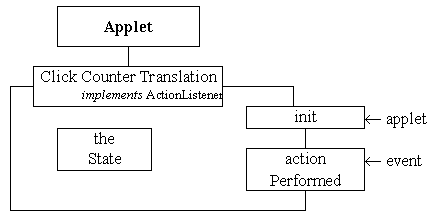

Click Counter Translation
- class diagram

The ClickCounterTranslation class extends the Applet class and so inherits all of the actions required for it to interact with a browser, be loaded over the Web, etc.
The init() action will be called when the applet is able to create its AWT instance hierarchy and perform any other initialisation actions (which do not depend upon the existence
of component peers).
The class has to implement the ActionListener interface in order to be able to listen to the actionEvents generated by the Buttons on the interface. This requires the class to declare an actionPerformed() action.